Chart Typography and Sizing
Good chart typography creates a hierarchy among elements and guides the reader through the visual. Urban uses a defined set of font sizes and styles to create this hierarchy.
Urban uses the Lato font for all our products, including the website, PDF publications, and presentations. A suitable replacement is the default Arial font. If Lato is not installed on your computer, contact the Tech and Data department.
The font sizes in Urban charts depend on whether the chart is produced for the web or within a PDF. The Excel macro and R theme apply the correct font sizes to both web and PDF figures.
|
Font |
Color |
Case |
PDF figures |
Web figures |
|
|
Figure number |
Lato Regular |
#1696d2 or rgb(22, 150, 210) |
ALL CAPS |
8pt |
11px |
|
Title |
Lato Black |
#000000 or rgb(0,0,0) |
Title (all major words capitalized) |
18pt [inserted in the Word document, not the actual chart] |
20px |
|
Subtitle |
Lato Black |
Black (#000000 or rgb(0,0,0)) |
Sentence (only the first word capitalized) |
14pt [inserted in the Word document, not the actual chart] |
16px |
|
Axis titles |
Lato Regular |
Black (#000000 or rgb(0,0,0)) |
Sentence |
8.5pt |
12px |
|
Axis labels |
Lato Regular |
Black (#000000 or rgb(0,0,0)) |
Sentence |
8.5pt |
12px |
|
Data labels |
Lato Regular |
Black (#000000 or rgb(0,0,0)) |
Sentence |
8.5pt |
12px |
|
Legend text |
Lato Regular |
Black (#000000 or rgb(0,0,0)) |
Sentence |
9.5pt |
14px |
Most of Urban’s charts will be full width (760px for web and 6.25” for PDFs). The main content width on the Urban website is 760px, which translates to approximately 125.83 characters in Excel. In PDF products, simple figures can be 3.13” wide, which is half the width of full-size figures.
Using the Excel Macro
Urban has created an add-in for Microsoft Excel that automatically applies Urban colors, chart formatting, font styling, and font sizes to Excel figures. This set of instructions will show you how to install and use the add-in.
Installing the add-in on PC computers
- Download the Excel add-in from the Brand Identity Guidelines intranet page: Your Urban > Templates > Excel > “Excel add-in for creating Urban style charts.”
- Save the file to your computer. You can put the file anywhere, but placing it directly in the Excel AddIn folder is preferred. On Urban PC computers, the add-in folder is most likely located on the D drive at:
D:\Users\USERNAME\AppData\Roaming\Microsoft\AddIns\. (USERNAME is your username on the computer. On other computers, the folder may be in the C: drive in the same subdirectory.)- If you can’t locate the AppData subdirectory, you can use Excel’s built-in Themes menu to help you locate it. Under the Page Layout tab, select the Themes button. At the bottom of that menu, select “Save current theme.” Excel will bring you to the Document Themes folder, which is in
D:\Users\USERNAME\AppData\Roaming\Microsoft\folder. You can copy the folder location from the top of that window, paste it into your Windows Explorer folder, and navigate to the AddIn folder from there. - To navigate to this AddIn folder location, you may need to unhide the AppData subdirectory. To do so, open a Windows Explorer window, click Tools, then View. You can now select “Show hidden files, folders, and drives” under the “Hidden files and folders” option.
- If you can’t locate the AppData subdirectory, you can use Excel’s built-in Themes menu to help you locate it. Under the Page Layout tab, select the Themes button. At the bottom of that menu, select “Save current theme.” Excel will bring you to the Document Themes folder, which is in
- Regardless of whether you saved the file to your AddIn folder or to another location on your computer, you can now install the add-in. To do so, select the File tab in the ribbon.
- At the bottom of the File window, select Options.
- In the Options window, select the Add-Ins option near the bottom of the left pane, and then select the Go... button at the bottom of the larger window.
- At this point, a menu will load. If you saved the add-in file to the “AppData” folder location, the add-in should already be listed. You can simply check the box and select OK. If you saved it anywhere else, select Browse… and navigate to the location where you saved the
UrbanGraphingStyle.xlamfile. (Excel may ask if you’d like to place the add-in into your Roaming folder; it is fine to select OK here.) Select OK.- SECURITY NOTE: If the ribbon tab does not appear after installing the add-in (this typically happens in a later session), it may be due to a security update from Microsoft. A detailed description of how to solve this issue can be found here.
Installing the add-in on Mac computers
- Save the add-in to a location on your computer.
- Under the Tools menu in the top toolbar, select the Excel Add-Ins... option.
- Select Browse… and navigate to the
UrbanGraphingStyle.xlamfile. Select Open. The box next to the UrbanGraphStyle add-in should now be checked. In this smaller menu, select OK. You will now see the Urban Graph Styles tab in your Excel ribbon. The tab will appear every time you open Excel.
Using the add-in
- Select the data you want to use to create your chart.
- Click the chart option from the Urban Graph Styles menu that matches the style of your chart.
- A pop-up box will appear asking if you want to format your graph for web or print (the Cancel option will close the dialog box). An Urban-formatted version of your chart will appear.
- Edit the x-axis title and y-axis title or delete them if the units are already specified in the chart title or subtitle.
- Edit any corresponding data cells to fix wording and capitalization as needed. Your edits should automatically appear in the chart.
- To export your chart:
- On PC computers, use the Export menu in the add-in. You can choose a folder location and file type as you would for any other software tool.
- On Mac computers, the Export menu does not exist. Instead, copy the chart (Command-C), open the Preview tool, and open a new file (Command-N). Save the chart (Command-S) and use the drop-down menu to change the file format to PNG. In the resulting menu, change the resolution to 600 (pixels/inch). Name the file and click Save.
Using the R Urban Theme
urbnthemes is a set of tools for creating Urban Institute–themed plots and maps in R (the theme has been tested against ggplot2 version 3.0.0; it will not function properly with older versions of ggplot2). The package extends ggplot2 with print and map themes as well as tools that make plotting easier. A comprehensive set of examples is available at the Institute R Users Group website.
library(urbnthemes) makes ggplot2 output align more closely with this style guide, but it does not produce publication-ready graphics. Visual styles must still be edited using your project’s normal editing workflow. Exporting charts as PDFs rather than image files (e.g., PNG, JPEG) will allow them to be edited more easily.
Run the following code to install or update urbnthemes:
install.packages("remotes")
remotes::install_github("UrbanInstitute/urbnthemes")
Run the following code at the top of each script:
library(tidyverse)
library(urbnthemes)
set_urbn_defaults(style = "print")
A comprehensive review, installation instructions, and more details and tutorials about using R at Urban and the urbnthemes package can be found in the Urban Institute R Graphics Guide.
Inserting Figures into Urban Word Templates
Urban Microsoft Word templates have built-in formatting to ensure correct placement of figures. To insert a figure—either as an Excel graph or as an image exported from another tool like R—follows these steps:
- Start with the most recent Word template for your product, which can be downloaded from Urban Explorer on the Brand Identity Guidelines intranet page.
- For each figure, copy and paste the figure template text from the figure number through the notes line (see image below). This will automatically apply the built-in styles to the text around the figure.
- Write out the figure number, title, and subtitle (delete the subtitle if needed) directly in the Word file (not in the Excel graph or image).
- Highlight the red Figure Placer paragraph and then paste your figure, choosing either “Use Destination Theme and Embed Workbook,” “Use Destination Theme and Link Data,” or “Paste Special … Microsoft Office Graphic Object.”
- Write out the source and notes beneath the figure.
R Shiny, Tableau, and PowerBI Guidance
Urban staff use a variety of data analytics and visualization tools in their work. When it comes to R, interested users should consult the public-facing R tutorials available on the Urban Github site and consult the R User Group for additional resources. We recommend that Urban staff consult with the Data Visualization team for additional support related to obtaining Tableau and PowerBI licenses and creating graphs or dashboards with these tools.
Public-facing, high-visibility data visualization tools and dashboards published at Urban are built with custom tools and undergo a full design and build process to ensure that products hit the highest accessibility, UI, and mobile-friendly design standards—all with Urban’s wider audience in mind.
COMM and the Tech and Data Science teams are developing guidance on R Shiny, Tableau, PowerBI, and other off-the-shelf dashboarding tools for use at Urban. Our intake processes are connected for this kind of tooling request.
Currently, only the R Shiny tool is approved for specific use cases. Our consensus is that R Shiny dashboards can be appropriate for highly niche audiences (e.g., other researchers or select funders), with review and input from COMM’s Design and Data Visualization teams.
These products are not embedded on Urban’s website. Rather, our guidance is to screenshot and link to them, as seen in this Data at Urban post and this Urban Wire post. These guidelines are evolving and subject to change.
Chart Parts
Key elements of Urban charts are as follows:
- The chart should be referenced in the text.
- Titles use headline/title case, and subtitles use sentence case; all titles are left aligned.
- All text within the figure uses sentence-style capitalization.
In all Urban products, researchers should reference charts and tables in the text to provide context for the data. Figures and tables should be placed immediately after the paragraph that references them. If the chart consists of a limited number of values, consider a couple sentences of text to explain the data in lieu of an image.
Urban charts require a title, source line, and axis or other labels identifying the elements and units of the chart. This can be achieved by using some combination of a subtitle, axis titles, axis labels, data labels, and legend (not all elements will be necessary for every figure). Urban charts posted on the web also include an Urban tagline/logo in the lower-right corner of the figure so that when others copy and paste our charts, Urban is identified as the source.
For Excel charts produced for the web, add the title, subtitle, source, and notes directly in the Excel chart. Because Excel’s chart title and subtitle fields are limiting in terms of formatting, we use a regular text box for all the text at the top of the graphic, as well as for the source and notes text at the bottom.
In charts produced for PDF publications, add the title, subtitle, sources, and notes as text directly in the Microsoft Word file. Axis titles, labels, and the legend are added in Excel or in the R chart space directly.
On the web
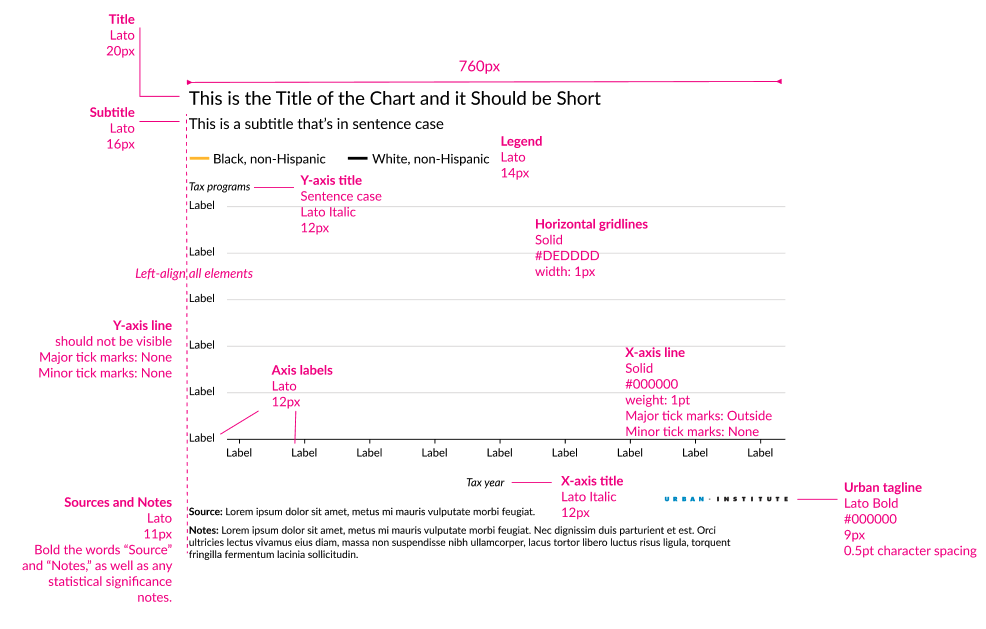
The chart parts are described in detail below.
- Titles: Use headline case for titles and sentence case for subtitles. Keep them short and simple. Try to explain the chart in a few words and draw conclusions where possible. Use a subtitle to add qualifiers or further clarification. The unit of measurement should be mentioned only once, either in the subtitle or the y-axis label. For example, instead of a purely descriptive title, such as “Labor Force Participation Rate, Men and Women, 1950–2024,” a more active title would be “The Labor Force Participation Rate Has Declined for Men and Increased for Women.” Subtitles can be used to denote specifics about the data, such as time periods, frequency, units, or geography.
- Axis titles and labels: Use sentence-style capitalization for all text within the figure, including axis titles, data labels, and legends. In sentence-style capitalization, the first letter of the sentence and any proper names (including program names) are capitalized, and all other text is set in lowercase. For example, “Percentage of total funding,” “2021 operating expenses,” “Denver Regional Transportation District,” and “$50,000 and above.” You can use abbreviations in the axis titles and labels as long as the abbreviations are defined in the notes.
- Source: The source line should contain the source of the data for the figure and include full publication information, including the authors, title, and publication date, all in Urban’s notes citation style. All figures in Urban publications should have a source line. If the source of the data is Urban analysis, the source line can read “Authors’ analysis.”
- Notes: The notes line can include technical information about methodology, statistical explanations, and notes that apply to certain values. The notes should also define all acronyms and abbreviations used within the figure, using this format: “FPL = federal poverty level.” Notes that apply to certain cells in tables should use superscript letters as note references. Asterisks should only be used to indicate significance levels (e.g., p < 0.001, * = significant at 0.001 level).
- Legend: Stretch legends across the top of the chart between the title/subtitle and y-axis label. Order the series in the legend in a logical way, mirroring the order of the data in the chart. When possible, directly label the data in the chart and omit the legend.
- Data labels: Chart elements can be labeled to provide readers with the specific data values or additional context. Data labels should match the units of the chart and be placed as close as possible to the actual data point (e.g., top or inside a bar on a bar chart or a point on a line chart). Explanatory labels should be concise and explain important, surprising, or interesting aspects of the graph.
- Tagline: The Urban tagline is built from standard text using Lato Bold, 9pt, black, small caps, with 0.5pt of expanded character spacing. The word “Urban” is colored blue (RGB[22,150,210] or #1696d2) and “Institute” is black (RGB[0,0,0] or #000000). The Excel add-in automatically includes the tagline for web graphs. For PDF products, the tagline is added as text in the Microsoft Word file at the bottom right of the figure, with no spacing between the figure and the tagline. The tagline is omitted in government-funded products.
Color
Urban's main colors are cyan, gray, and black. Yellow and magenta are used as secondary colors throughout the new Urban brand. In general, yellow and magenta should be used sparingly; these colors are best for highlighting purposes, such as when drawing attention to a certain category or indicating a trend line. Tertiary colors for graphics include space gray, green, and red, and should be used infrequently.
When selecting colors for charts and graphs, first consider the type of data you are presenting. Usually, data for visualizations can be grouped into one of four main groups: categorical, sequential, diverging, or binary.
- Categorical palettes are best to distinguish discrete chunks of data that do not have an inherent ordering (e.g., race, state of residence).
- Sequential palettes are appropriate when data follow a certain order, such as when data range from low to high (e.g., poverty rates, unemployment rates). The typical approach is to use light(er) colors for low(er) values and dark(er) colors for high(er) values.
- Diverging palettes are used to distinguish values that vary from a central value, such as the average, median, or zero. Diverging palettes will use a neutral color for the central value, such as white or gray, and then employ a sequential color palette in either direction. For example, a sequential palette for changes in per capita gross domestic product might be centered at zero with a white color, then range to dark yellow for negative values and to dark blue for positive values. The center of the diverging palette should always be labeled to avoid confusing the reader.
- Binary palettes are a subset of categorical palettes and are used to distinguish between two distinct groups, such as Republicans and Democrats. When comparing data on binary gender groups, do not use blue to represent men and pink to represent women. Instead, choose a color combination such as yellow and cyan or another combination of our main graphic colors.
For more information about the subtleties of color and choosing colors for your data visualizations, refer to Datawrapper's blog post "A detailed guide to colors in data vis style guides” and Nightingale magazine's blog posts on the subject.
Color combinations
Urban’s core color palette consists of eight main colors, ordered below in a hierarchy from core colors to less commonly used colors. All Urban tool sets, including the Excel add-in and the urbnthemes R package, follow this hierarchy.
Shades of main colors
Specific shades of each main categorical color are found below for use in graphs that require sequential and diverging palettes. It should be noted that tints and shades of colors in the Excel add-in do not exactly match these colors.
The palettes below offers multiple options for combining colors in Urban charts, though only the combinations shown in the first set of each section are included in the Excel add-in and R theme. When in doubt, individuals are encouraged to consult the Urban Design and/or Data Visualization teams for assistance in choosing color combinations.
Main graphic colors
Shades of main colors
var colors=["#CFE8F3","#A2D4EC","#73BFE2","#46ABDB","#1696D2","#12719E","#0A4C6A","#062635"];
var colors=["#F5F5F5","#ECECEC","#E3E3E3","#DCDBDB","#D2D2D2","#9D9D9D","#696969","#353535"];
var colors=["#FFF2CF","#FCE39E","#FDD870","#FCCB41","#FDBF11","#E88E2D","#CA5800","#843215"];
var colors=["#F5CBDF","#EB99C2","#E46AA7","#E54096","#EC008B","#AF1F6B","#761548","#351123"];
var colors=["#DCEDD9","#BCDEB4","#98CF90","#78C26D","#55B748","#408941","#2C5C2D","#1A2E19"];
var colors=["#D5D5D4","#ADABAC","#848081","#5C5859","#332D2F","#262223","#1A1717","#0E0C0D"];
var colors=["#F8D5D4","#F1AAA9","#E9807D","#E25552","#DB2B27","#A4201D","#6E1614","#370B0A"];
One group
For one color group, grey should not be used as it loses focus while magenta draws attentionTwo groups
Categorical
Sequential
Three groups
Categorical
Sequential
Four groups
Categorical
Use yellow and magenta sparingly, usually only for highlighting data.Sequential
Five groups
Categorical
Sequential
Six Groups
Categorical
Sequential
Seven Groups
Categorical
Sequential
Eight Groups

Consider consolidating categories or breaking up the chart. Eight groups is really too many.
Text and contrast
Urban Institute data visualizations should strive to meet Web Content Accessibility Guidelines (WCAG) to make web content most accessible to people with disabilities. (Read more about those international standards here and in the Urban Institute report Do No Harm Guide: Centering Accessibility in Data Visualization). Urban follows WCAG 2.0 Level AA guidance to ensure that background color and text pairings maximize contrast.
White text at smaller sizes (18px or less) will pass the WCAG AA ratings for contrast on top of these colors:
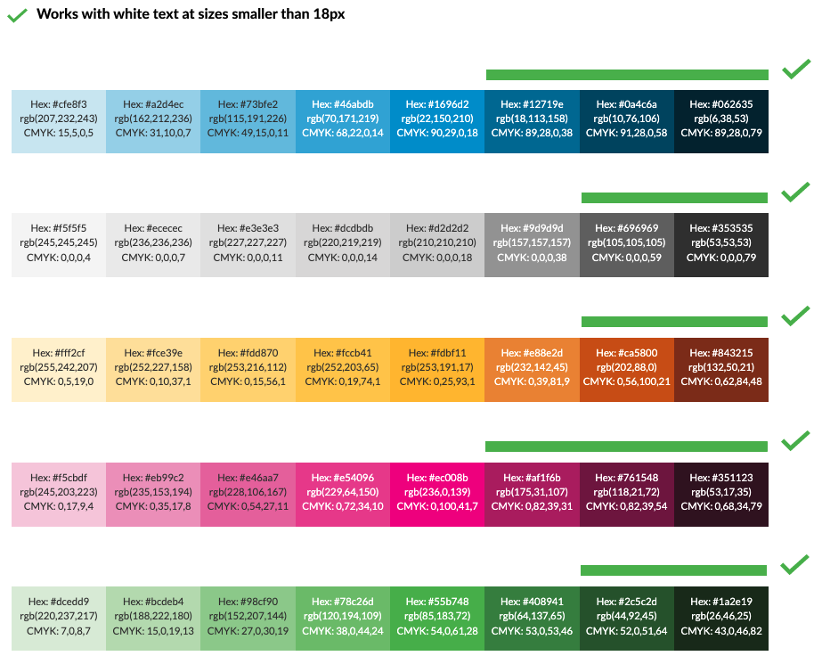
Black text at smaller sizes (18px or less) will pass the WCAG AA ratings for contrast on top of these colors:
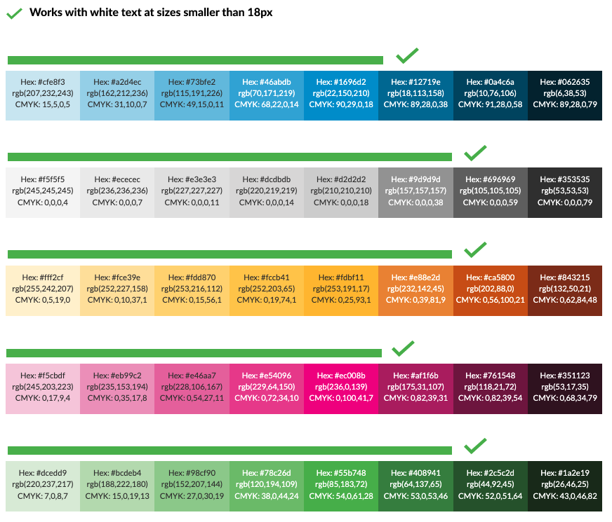
What Is the Right Chart for Your Data?
Stop! Should it even be a chart?
Although charts are great for communicating data, they are not the appropriate tool for every situation. If you find explanatory sentences do a better job of distilling the information you want to convey, consider going without a chart. If your main goal is to present detailed information as opposed to showing patterns, or if it’s important that the reader can accurately determine the values of your data, consider using a table instead. You may also find that simply including a single, large number (commonly known as “big aggregate numbers”) may be sufficient. In these cases, inserting a simple text box or shape in your PowerPoint or Word document will work.
Selecting the appropriate chart type for your data and the message you want to convey is critical to creating a successful data visualization. The chart chooser below offers guidance on what types of charts are best suited for different purposes. However, this is not an infallible set of choices, because there is not a one-to-one relationship between data types and graph types; for example, a vertical bar chart can be used to compare categories or show changes over time. The list below should therefore be viewed as a starting resource to guide the graph creator. If you are unsure, reach out to the Data Visualization team to help explore your options.
|
I want to... |
|
|
Compare values or rankings |
|
|
Show trends or change over time |
|
|
Depict a part-to-whole relationship |
|
|
Show deviation from a reference point |
|
|
Show the distribution of values |
|
Best Practices for Creating Effective Charts
Data visualization is a mix of science and art. There are some basic guidelines and best practices rooted in our understanding of cognitive psychology, statistics, and human-computer interaction, but these also reflect preferences for different colors, typefaces, layouts, and more. The list of best practices provided here is a set of guidelines derived from years of work, research, and experience.
Keep it simple. Don’t try to stuff every data value into a single graph. This doesn’t mean you need to strip out all your data, but consider what you want your reader to come away with. You might be able to include all your data and highlight a subset of values. For example, consider a line chart with all 50 US states—you could use gray for the majority of states and add color to just the few you want to highlight.
Be consistent. Once you’ve chosen blue to represent one group in one chart, make sure all other charts in your publication or slide deck use blue to represent that group as well. This consistency makes reading and comprehension easier for your reader.
Small multiples. The small multiples approach is exactly what it sounds like: create a series of smaller graphs positioned in close proximity. Breaking a single larger, complex graph into smaller pieces can not only make a complex graph easier for readers to comprehend but also help create a sense of movement by aligning changes over time in a particular order.
There are two primary guidelines to follow when creating a small multiples visualization. First, each multiple should be the same type, shape, and size and use the same type of scales, which should start and end at the same values. The best way to think about small multiples is to take a single, dense graph and break it up into many charts—in other words, the framing elements of the chart should not change. Second, try to order the small multiple graphs in a meaningful way—for example, by some value, geographic location, or even alphabetically.
Highlighting. Highlighting can call attention to specific data points in very dense charts. The observations you want the reader to focus on should be rendered in a color that helps them stand out (usually pink or yellow at Urban), while the rest of the series are in a different color (usually blue, black, or gray). However, be selective with your use of color to highlight specific values, series, or observations, because too many colors can make it difficult to pick out the values on which you want your reader to focus.
Reference lines. There may be times when you want to include a reference line or pointer for a specific event, threshold, or benchmark. In such cases, make sure that your line is measured precisely. For example, if you are marking June 2010 in a line chart, the reference line should be located halfway between 2010 and 2011.
Titles. Use active, concise titles. For example, instead of a purely descriptive title, such as “Labor Force Participation Rate, Men and Women, 1950–2019,” a more active title would be “The Labor Force Participation Rate Has Declined for Men and Increased for Women.” Subtitles can be used to denote specifics about the data, such as time periods, frequency, units, or geography.
Annotation. Annotation is one of the most important ways to improve your data communication efforts. There are two primary ways to annotate your visualizations. First, adding explanatory text within the graph itself can highlight specific values or explain content. Second, you can add a layer of annotation to explain how to read the graph. This approach can be especially useful for readers who may not be familiar with a particular graph type. For example, you could add a pointer that denotes how the values get larger or smaller along each axis in a scatterplot.
Data labels and markers. When possible, avoid using legends and instead directly label the data on the graph. Endeavor to evenly space and align the labels instead of scattering them around the graph, which can make it difficult for your reader to find the label and risks emphasizing one series or data value over another. On a line chart, for example, you might place the labels at the far right of the graph, slightly outside the graph space, but left-aligned.
Marking outliers. Data values that are significantly different from others in your dataset may be considered outliers. In some sense, the statistical definition of an outlier is not necessarily important; a data value(s) may simply look like an outlier when plotted in your graph, which may require some explanation. Be careful with outliers, however; they can signify an interesting result or finding, but they may also indicate that something is wrong or mismeasured in the data.
Showing uncertainty. Visualizations that depict distributions or uncertainty may be inherently difficult for many readers who are not familiar with the underlying data or statistical concepts. It is therefore important to clearly explain when certain data are missing or if there is uncertainty around certain estimates.
There are various kinds of data uncertainty. One form of uncertainty stems from randomness in the data. Small samples are a prime example of this kind of uncertainty. Consider a political poll that gives candidate Smith a 54 percent approval rating with a margin of error of plus or minus 4 percentage points. The poll has uncertainty because the dataset is only a sample of people who responded to the survey.
Another form of uncertainty comes from inaccurate, untrusted, imprecise, or unknown data. In some cases, we would be unable to address the uncertainty because we aren’t aware of it. In other cases, we could say our data are imprecise because, for example, it’s measured at an aggregate level; for example, infants’ ages captured in months rather than weeks.
Urban takes both kinds of uncertainty seriously, and researchers are best equipped to assess whether their data are unreliable. But knowing when to visualize different kinds of uncertainty is a different task and often depends on the knowledge and statistical sophistication of your reader.
Stay away from 3-D. There is no need to add a superfluous third dimension to your chart, particularly when you don’t have a third value. The 3-D effect available in many software tools actually distorts the data values because the effect is not actually 3-D but rather a perspective rendering of 3-D.
Be careful with data transformations. Log scales or other transformations can be useful for depicting rates of change or to address large outliers. The obvious trade-off is that many readers will not understand what a log transformation is and what it means. For example, everyone can understand what $150,000 of income means, but a logged value of 5.18 is not familiar to many readers. However, log scales can be an appropriate choice when the rate of change is more meaningful than the absolute values.
Data Visualization Absolutes
The Urban Institute is committed to exploring and expanding how we create and engage audiences and readers through our visual display of information. While the practice of data visualization is a mixture of art and science with ample opportunity for creativity, there are certain data visualization practices that we avoid.
- Nonzero baselines. The axis in bar charts (whether vertical or horizontal) should always start at zero. The gaps between bars are overemphasized when the value axis starts at something other than zero. When small differences between bars are important to show but a zero axis makes those differences difficult for the reader to see, consider adjusting the data to show percent change, difference, or some other similar adjustment. It is important to note that other charts types that do not use length or height as the primary encoding—including, for example, scatterplots and line charts—do not need to start at zero.
- Dual axis charts. Charts that have two axes—where one series is tagged to one axis and another series is tagged to another, parallel axis—should be avoided. These kinds of charts are confusing, difficult to read, and are often misleading. There are several possible solutions to creating a dual axis chart, including multiple graphs (arrayed either horizontally or vertically); show the percent change or another normalization; or use a different chart type such as a connected scatterplot. (There are two exceptions to this rule: charts that show the translation of a single measure such as Fahrenheit and Celsius temperatures; and the Pareto chart, which shows individual values as bars and a line showing the cumulative sum.)
- Pie charts with too many slices. This advice is purposely left unclear. There is no specific “rule” about how many slices are too many slices in a pie chart, but the general recommendation is to keep the overall number of slices in pie charts to fewer than 5. Humans cannot easily compare differently sized slices in pie charts, which reduces the effectiveness of the chart itself. In general, pie charts are best used when the slices of interest are values that generate right angles, which are familiar shapes, namely 25% and 75%, or a straight vertical line through the chart, namely 50%. While there may be exceptions to this guidance, Urban style is to avoid pie charts that have too many slices and are therefore difficult to understand.
- Avoid too many categories. While the Urban color palette offers several hues and multiple tints and shades, our standard is to keep the number of categories in any graph to fewer than seven. Stacked bar/column charts, pie charts, line charts, and other charts with seven or more series/colors will look cluttered and be difficult to read. In these instances, fewer series or several multiple charts may be a better solution.
Accessibility
It’s important to consider how people with different impairments and disabilities access online content. Many people rely on screen readers to navigate the internet. (Screen readers are tools used by blind people, people with low vision, and people with learning disabilities who consume text in audio formats.) When a screen reader passes by content on the screen, including file names, titles, and headings, it reads this content out loud. Ensuring that content will work with screen readers is a large part of making a document accessible. Some of the primary issues we’re concerned with when we talk about accessibility are hearing issues, vision issues, color blindness, ability, cognition, neurodiversity, and learning disabilities. Not all the conditions are permanent—consider, for instance, how you would use a computer if you were to break your arm.
To create accessible content, Urban follows the guidelines laid out in Section 508 of the Rehabilitation Act of 1973. Section 508 requires US federal government agencies to develop, procure, maintain, and use information and communications technology that is accessible to people with disabilities. We also follow some of the recommendations and guidelines from the Web Content Accessibility Guidelines. Some federal agencies that fund Urban work have agency-specific accessibility requirements that we are asked to follow.
Data visualization creators can do several things to create accessible charts and tables:
Write alt text
- Screen readers can only communicate information via text. To meet accessibility requirements, all nontext items in a web product require “alternative text” (alt text), or a written description that communicates visual content. All Urban website content must have alt text for charts, tables, and images. All Urban PDF products asked to meet 508 accessibility requirements must also have alt text, but alt text is not otherwise required for images in Urban PDF products.
- Urban researchers are responsible for writing alt text when it is required. It is often easier to write alt text as you create your figures rather than at the end of the writing process. Engaging with Urban’s Disability Affinity Group may be one way to seek advice on writing good alt text or, more generally, creating accessible content.
Below, we share some guidance on writing from the MacArthur Foundation and a blog post by Amy Cesal:
- Alternative text should present the content and function, not necessarily a description, of an image. If you had to remove the image, what text would you put in its place?
- If an image is decorative, such as a header image on a blog or cover image on a report, or the alternative text is provided in nearby text, then the image should have empty alternative text (some tools have an option for “blank” or “empty”). If this is not an option, leave the field blank. You should not put empty spaces, empty quotes (except in HTML alt=""), or any other nonsense information in these fields.
- Avoid words like “picture of,” “image of,” or “link to.”
- Use the fewest number of words necessary. Less than 160 characters is ideal for search engine optimization.
- Avoid phrases like “click here,” “here,” “more,” “more information,” “read more,” and “continue.” Instead, use descriptive text that informs a user of the link destination.
Meet color contrast requirements
Urban’s color palette has been tested to meet accessibility requirements. If you are working with an agency or group that requires additional accessibility considerations, please contact the Data Visualization or Design teams. You can also consider adding additional encodings to your visualizations, such as hashmarks, stripes, or other patterns. This style guide promotes clean design and graphs that are free of extraneous colors, but when communicating data to readers with accessibility needs, additional encodings may be important.
Web Content Accessibility Guidelines (WCAG) 2.0 Level AA requires the contrast ratio of the luminance (think: brightness) of two colors to be 4.5:1 for normal text and 3:1 for large text. A higher level of contrast (Level AAA), requires a contrast ratio of 7:1 for normal text and 4.5:1 for large text. Large text is defined as 14 point (typically 18.66px) and bold or larger, or 18 point (typically 24px) or larger. Text standards also apply to text in graphics, such as data labels in a chart or text boxes in a logic model.
Below are the contrast ratios for the Urban color palette against white, black, and light gray background colors using the WebAim Color Contrast tool. The same ratios apply when the color relationships are swapped: for example, Urban blue text against a white background has the same contrast ratio as white text against an Urban blue background.
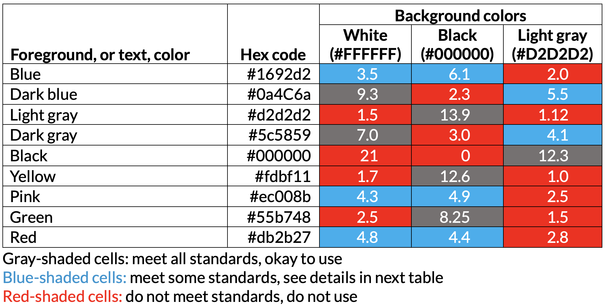
Please note that the Urban blue used in Urban Word templates does not meet color contrast requirements for headings. If you are producing an Urban PDF product that needs to meet 508 accessibility requirements, the editorial team has 508-compliant Word templates that use Urban dark blue to meet contrast requirements.
Avoid merged cells in tables
Tables are possibly the most difficult aspect of working with 508 accessibility standards. Tables that meet accessibility requirements cannot have any merged cells, blank cells, blank rows, or blank columns, as screen readers have a difficult time with spanner headings and blank cells. To meet 508-accessibility requirements, tables need to be stripped of spanner headings so that every column has a separate heading. This can be a tedious and time-consuming process. If you know you are producing a product that needs to be 508 compliant, it can be helpful to design tables that have no spanner headings from the start.
Use built-in Word styles in Urban Word templates
Manual formatting that creates tabbed indents for paragraphs, line spaces between paragraphs, and arbitrary heading styles is not accessible, as it creates extra characters that screen readers will read. Urban Word templates have built in styles that apply proper line spacing, paragraph indents, and heading hierarchy without relying on manual formatting. Urban’s built-in styles also cover table and figure formatting to ensure that proper line spacing and styles are applied to figure and table numbers, titles, subtitles, and notes. Built-in styles also allow us to apply the correct formatting and spacing to table elements, including column headings, row headings, table rows, and table text. Using these styles rather than manually applying formatting will help meet accessibility guidelines for line spacing, headings, and color contrast. You can apply Urban Word styles using the Styles Pane in Word, and/or your editor will review and apply these styles during the editing process. For PDF products that need to meet 508 accessibility requirements, use the 508-compliant brief or report template, which has additional accessibility formatting built in.
Write in plain language
Government agencies follow plain language guidelines to meet the Plain Language Act of 2010. In cases where Urban products must meet plain language requirements, the Urban Editorial team can conduct a plain language edit in addition to a copyedit. But even if your product does not need to meet plain language requirements, adopting some principles of plain language can help your readers better understand your charts and tables.
- Use active voice in titles and labels. Urban style is to use concise, active titles that tell the reader what they are supposed to learn and take away from the graph. Active titles help tell the story of your graph.
- Make sure to explain all chart parts. Your chart or table should have enough information that it can be understood out of context of the rest of your document. Make sure titles, labels, legends, and notes provide enough information to tell the full story of your data. Your target audience should be able to navigate your chart, even if they don’t have a technical background.
- Reduce jargon. Think about your audience and decide whether the terms that are familiar to you as a researcher will be understood by your readers. Aim to be as clear as possible and try to replace complicated words and phrases with more direct language. If a technical term is necessary to include but may not be understood by all your readers, define it!
- Omit needless words. With charts and tables, space is at a premium. Identify phrases that can be rewritten to be more concise.
Additional guidelines and strategies can be found in Urban’s Do No Harm Guide: Centering Accessibility in Data Visualization and the following Urban editorial resources: “508 Compliance Process” and “508 Accessibility Basics.”
Considerations for Data Related to Race, Ethnicity, and Gender
The Urban Institute’s mission is to open minds, shape decisions, and offer solutions. To advance that goal, we must think intentionally about how we can learn from and speak to audiences that reflect the rich diversity of US communities, and we must foster a culture where employees from different backgrounds and perspectives enjoy mutual respect, inclusivity, and collegiality.
Urban’s efforts around diversity, equity, and inclusion (DEI) are reflected in our hiring and promotion practices as well as in our published work. With every data project, Urban researchers have an opportunity to carefully consider the language they use to describe people and groups and how to visually present data about these groups to readers, users, and audiences, including the communities that participate in or are affected by our research.
Choosing language related to people and demographic groups
Urban editorial style does not prescribe language for the terms used to describe people. Instead, we encourage research teams to consider using language and terms that are inclusive and respectful of the people they describe. (See Urban’s DEI toolkits, a collection of reference guides for creating respectful and inclusive products.) Urban editors encourage researchers to choose terms mindfully and to use these terms consistently and appropriately throughout a research product, including in the titles, labels, and annotations of tables and graphs.
In some instances, Urban researchers may choose to use the same terms used in an underlying data source, such as the racial categories used by the US Census Bureau. In other cases, researchers may choose to deviate from those terms. Researchers may want to consider including a footnote explaining their language choices related to the people and groups in their research and, if appropriate, why these language choices mirror or deviate from the terms used in an underlying data source. (This footnote only needs to appear once in an Urban publication and is usually placed at the first instance of a term; it does not need to be repeated in the notes for each table and figure.) There are example footnotes in many of the DEI toolkits.
Choosing the order for groups in charts and tables
Many graphs and tables encode data by demographic group. Graph producers should take an active role in choosing how to order and present data values for different groups. Urban does not have universal rules about ordering demographic data in visuals, but a few considerations can help you make decisions about order:
- Is there a quantitative relationship or ordering between groups in your data?
- Is there a particular story or relationship you are trying to visualize? If so, the order or presentation of results should reflect that story.
- Is there a basic way to sort the results, such as by population size or sample size (weighted or unweighted), alphabetically, or by magnitude/effect of the results?
- Are groups ordered in a particular way in the underlying data, and is it appropriate to match that order in your chart or table?
Choosing colors for groups of people
Follow the Urban color palette to select colors for the groups in your dataset. Urban tries not to use color palettes that reinforce gender or racial stereotypes (e.g., pink for women and blue for men). Furthermore, researchers should avoid using colors associated with skin tones. Using standard Urban colors will avoid such issues.
Additional guidelines and strategies can be found in Urban’s Do No Harm Guide: Applying Equity Awareness in Data Visualization.
Chart Examples
The following examples use the styles and colors to illustrate common chart types. To deconstruct any example, download the master Excel file.
Excel example files
Urban has created an add-in for Excel that automatically applies Urban colors, chart formatting, font styling, and font sizes to Excel figures. Download the Excel Macro here.
Bar and Column Charts
When to use a bar or column chart
- For mostly for one variable
- To compares numerical values for different observations
- To show relative amounts
- To break one numerical variable out into different subgroups with grouped or stacked bars or columns
Style tips
- Avoid 3D bars or columns
- The y-axis should start at zero (there are a few instances when it is okay for the y-axis not to start at zero).
- The width of the bars should be about twice the width of the space between the bars.
- If all the bars measure the same variable, make them all the same color. Different shades have no relevance to the data.
- If you are showing fewer than 10 bars, consider eliminating the horizontal gridlines and y-axis line and directly labeling the data points.
- To differentiate subsets of data, projections, or averages, consider using a different color shade or gray.
- Legends should be stretched across the top of the chart and the order should match the order in the chart.
- Sequential series should be shaded from lightest to darkest for easy comparison.
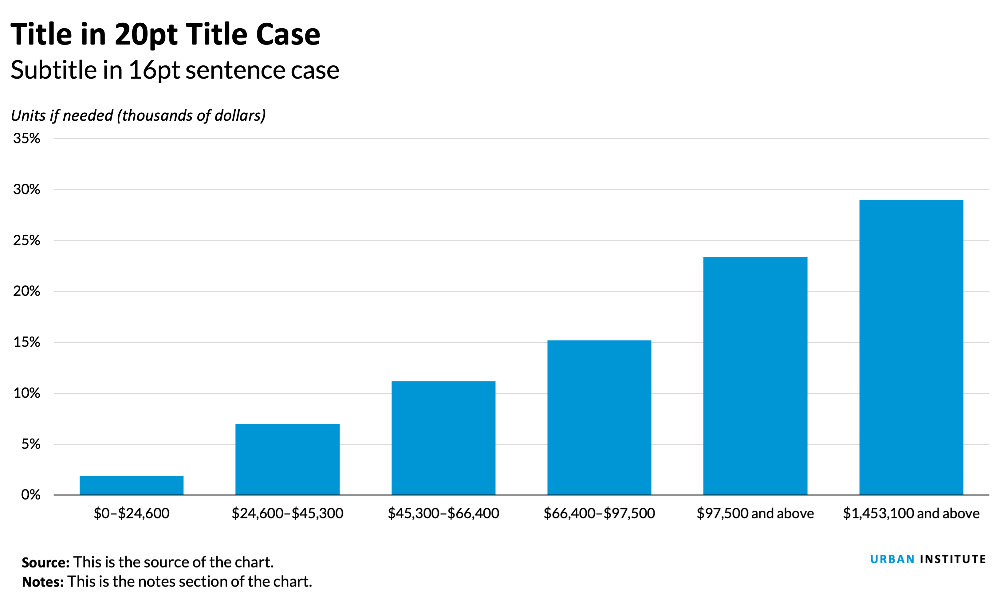
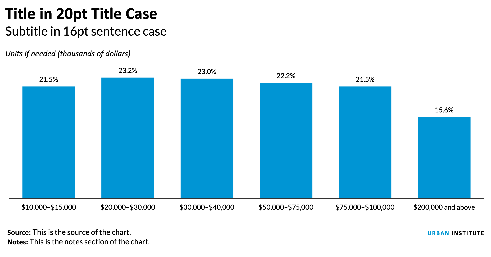
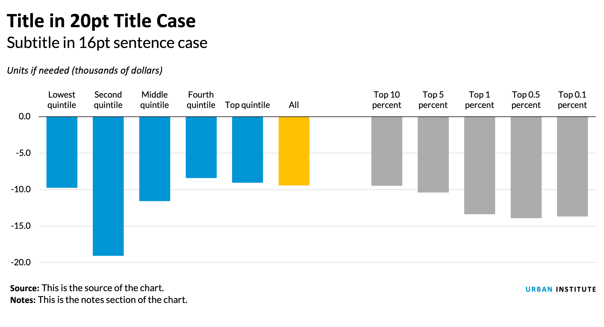
Notes about this chart
- Columns on the right in the “Top 10 percent” are a lighter sequential shade to differentiate them from the quintiles.
- The “All” category is shaded gray to create visual contrast from the rest of the columns.
- This chart isn't perfect because the columns on the right side of the chart are disproportionately large—their categories are a fraction of the others, yet visually they are equally weighted. A possible solution is to use conditional formatting and build on a traditional distributional table. See below.

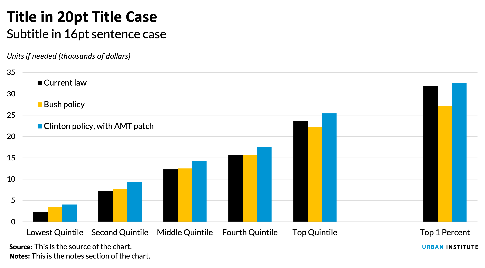
Notes about this chart
- When dealing with political comparisons, lean on the identifiable colors of the parties. Red colors are generally associated with Republicans and blues are generally associated with Democrats.
- When working on a chart that has political categories, be sure to use a nonpolitical color for baseline or unaffiliated series (in this case, “current law”).
Bar Charts
When to use a bar chart
- To show the trend in one variable, usually across a number of categories.
- To show multiple variables with multiple bars(if they are on the same scale).
- To show the same variable for multiple observations with multiple lines.
Style tips
- The y-axis should start at zero (there are a few instances when it is okay for the y-axis not to start at zero).
- Axis labels should always be horizontal. If you have long labels, consider making a horizontal bar chart instead of a column chart.
- When using a horizontal bar chart, right-align the category labels and center them vertically with the respect to the bar.
- Try to avoid vertical grid lines. Instead, directly label each bar.
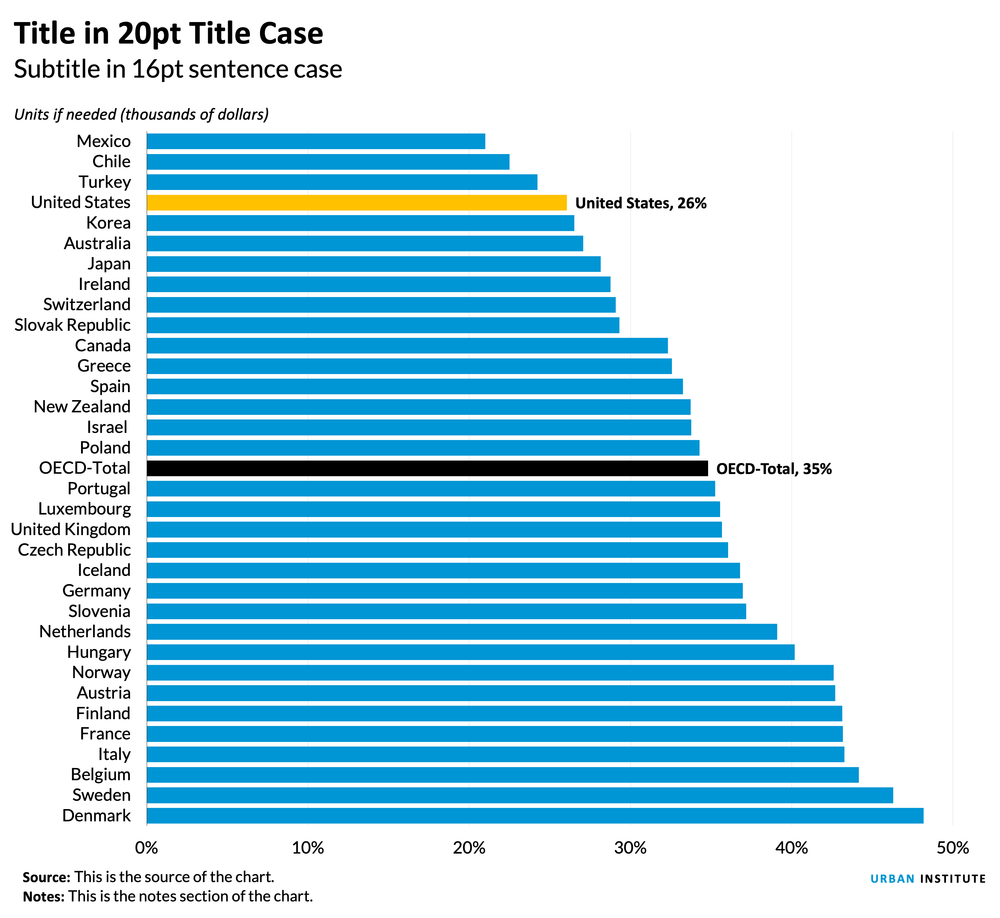
Notes about this chart
- United States is highlighted using the Poppy color. OECD-Total is differentiated by using a darker shade of the primary bar color
Area and Stacked Column Charts
When to use an area chart
- To show the trend in composition of a group over time.
- To display the part-to-whole relationship of categories, as well as totals.
When to use a stacked column chart
- When you want to show the composition of groups, but the data is not in a continuous time series.
- A 100 percent stacked area chart can be used when displaying composition over time.
Style tips
- The y-axis should always* start at zero.
- When possible, directly label series. If they are too small, use a legend.
- Avoid individual data labels.
- In a single chart, try to keep the maximum number of categories to three or four. More is not always better. Plotting too many categories on the same chart gives a confusing picture and defeats the purpose.
- Legends should be stretched across the top of the chart, or on the right, and the order should match the order in the chart.
- Sequential series should be shaded from lightest to darkest for easy comparison.
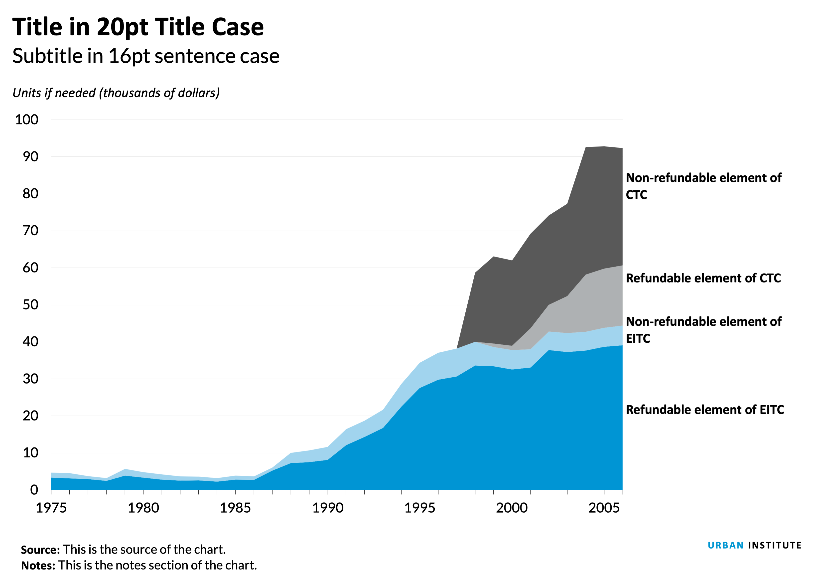
Notes about this chart
- This chart is an example of how to use two color families to tell a better story. Here, the CTC series are in shades of gray and the EITC series are in blues. This helps the user visually connect each series.
- Instead of a key, there is enough room to directly label the series using text boxes. Coordinated text color also helps the user make the connection between the label and the series, but beware of colors that are very light or otherwise difficult to read when applied to text.
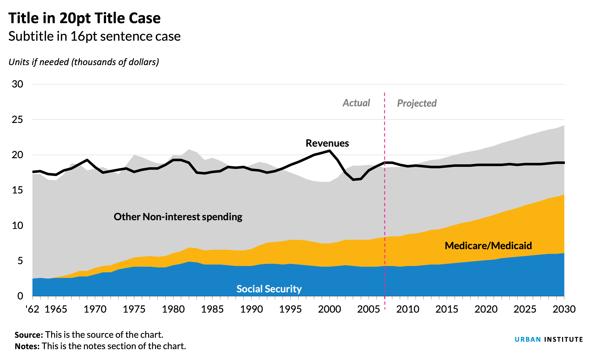
Notes about this chart
- X-axis labels should be every 5 or 10 years for time-series data like this, but the chart data starts at 1962. To hack this, I created a new column called "chart-year" and only included the years I wanted to show. Because of spacing issues, I had to abbreviate the first year, 1962, as '62.
- It appears that the growth in Medicare and Medicaid spending is a big story in this chart. For that reason, I chose to use the brightest color in the categorical palette for that series.
- Contrast in typographic elements helps establish hierarchy. The "actual" and "projected" labels are different from the series labels, so I made them gray and italic.
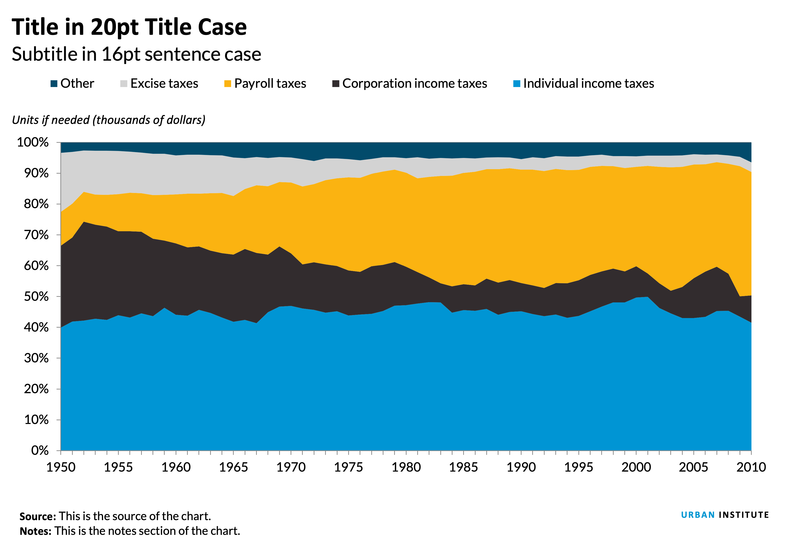
Notes about this chart
- The x-axis is starting to get a little cramped. To free up some space, we could modify the data so that anything over one million dollars is represented as $1m instead of $1,000,000.
- I put the legend to the right of the chart in a vertical layout. The order matches the order of the data in the columns.
Case study: Alternative to a stacked column chart
Often, when you want to show composition across several dimensions (usually time), the default choice is a stacked column chart. Though this is not a bad chart type, often a story can be better told by using a different chart.
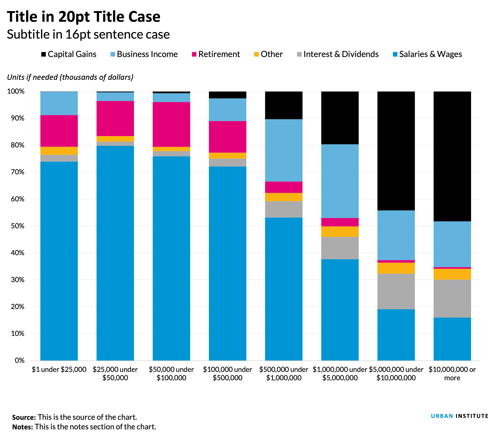
Notes about this chart
- It is hard to see change in the middle series because of the shifting height of the salaries and wages bars.
- The x-axis is starting to get a little cramped. To free up some space, we could modify the data so that anything over one million dollars is represented as $1m instead of $1,000,000.
- Because some series are too small to directly label them, a legend is necessary. The legend is positioned to the right of the chart in a vertical layout. The order matches the order of the data in the columns.
Grouped column chart
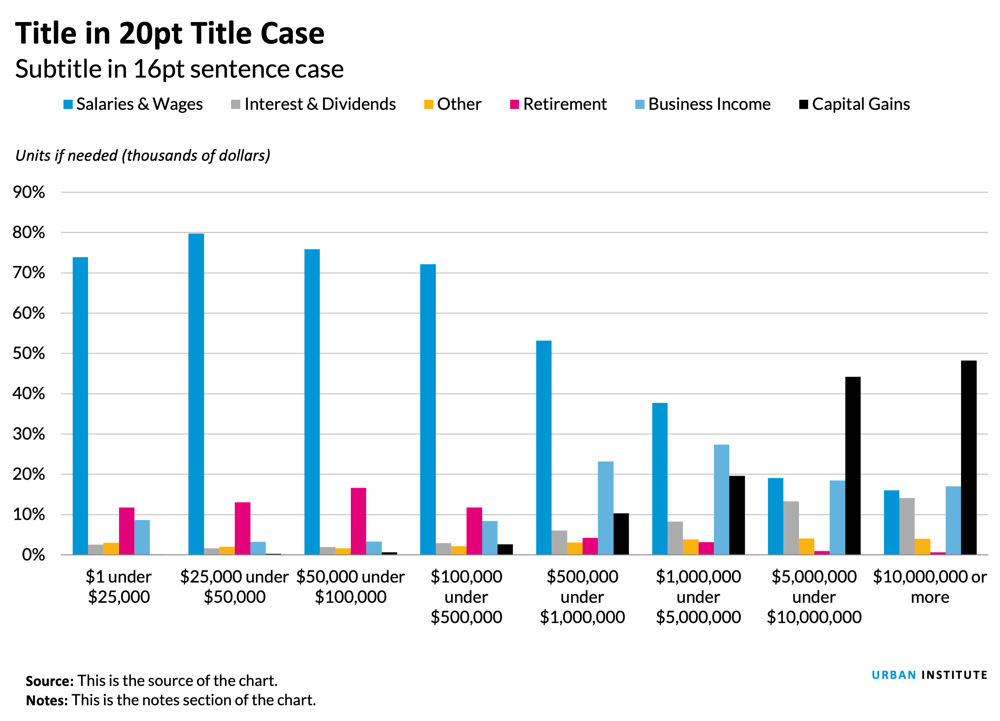
Notes about this chart
- This version makes it easier to see the change in individual series across categories.
- It is also easier to compare series within the same category, allowing a better visual understanding of the part-to-whole relationship of any one data point.
- The x-axis is starting to get a little cramped. To free up some space, we could modify the data so that anything over one million dollars is represented as $1m instead of $1,000,000.
Small Multiples Area Charts
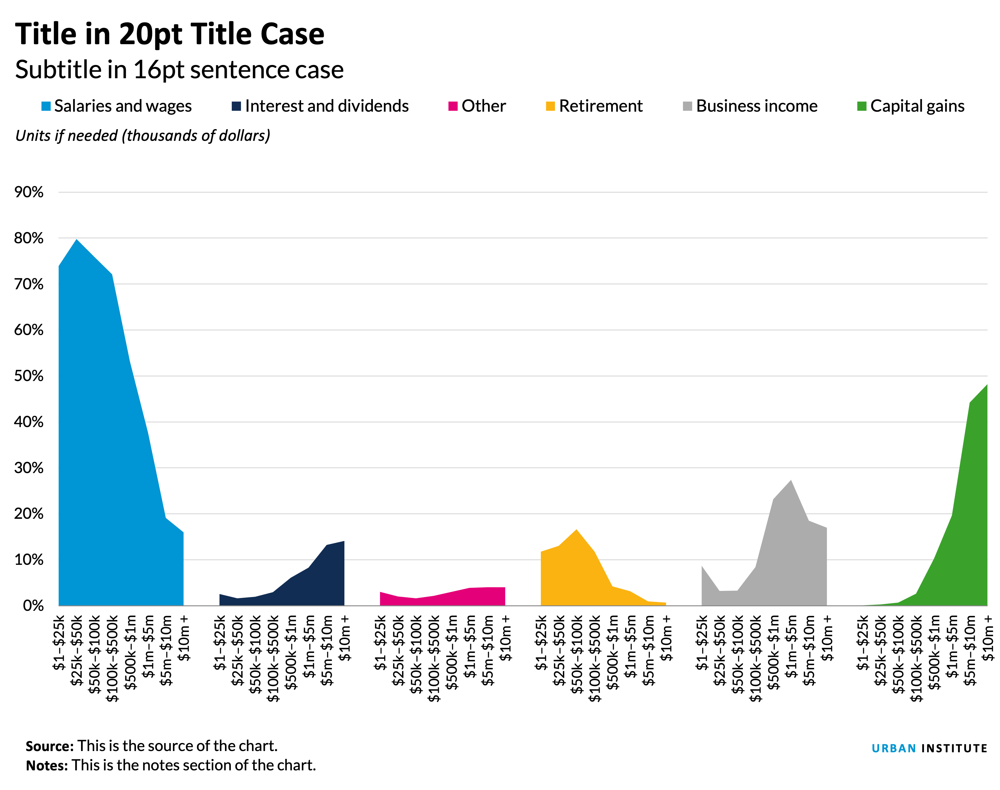
Notes about this chart
- If the story for this chart is about the distribution of any given series, small multiple area charts are the way to go.
- For example, it's easy to see that the lower-earning groups get most of their income from salary, whereas the highest-earners get more from capital gains.
- The x-axis labels are a little small.
- The legend is likely unnecessary—the same labels could be accomplished with text boxes.
- The colors here are also unnecessary—There's no need to code the data by color because they're all separate. I do, however, like the contrast the colors give each category.
Line Charts
When to use a line chart
- To show the trend in one variable, usually over time.
- To show multiple variables with multiple lines (if they are on the same scale).
- To show the same variable for multiple observations with multiple lines.
Style tips
- The y-axis should always* start at zero.
- When possible, directly label series. If too close together, use a legend.
- Avoid individual data markers.
- Avoid dashed lines.
- In a single chart, try to keep the maximum number of lines to three or four. More is not always better. Plotting too many lines on the same chart gives a confusing picture and defeats the purpose.
- Legends should be stretched across the top of the chart and the order should match the order in the chart.
- Sequential series should be shaded from lightest to darkest for easy comparison.
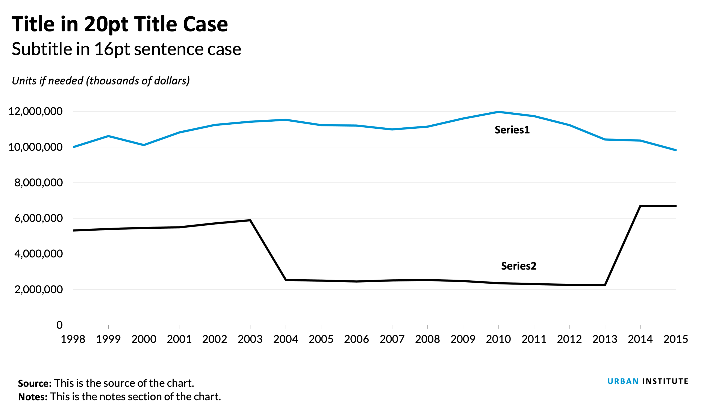
Notes about this chart
- Supposing the data in this chart is categorical, I used two contrasting colors. If the data were sequential, I would have used two shades of teal.
- The x-axis is starting to get a little cramped. To free up some space, we could reduce the number of labels (labeling every 2, 5, or 10 years) or change the year format to be '98, '99, '00, etc.
- If the labels contain the month and year, the standard format would be "Jan. 2010", for instance. Alternatively, other formats could be "1/2010" or "1/'10".
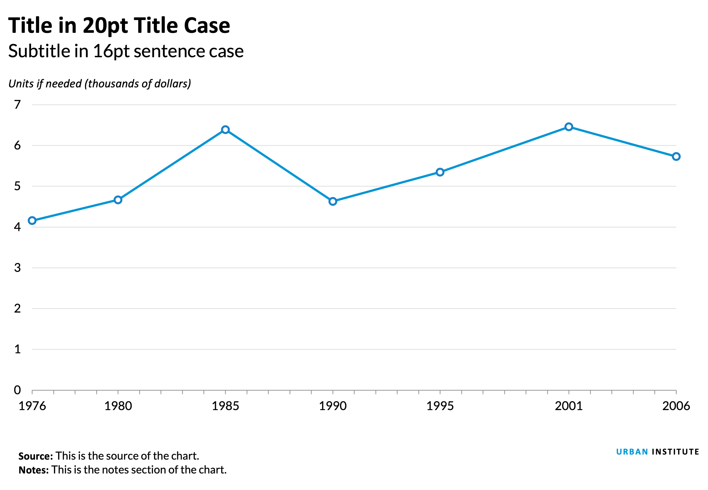
Notes about this chart
- Sometimes, we need to display data that are not on regular intervals. In these cases, it is helpful to mark the data points with individual markers.
Pie and Distribution charts
When to use a pie chart
- Use them sparingly. Often a bar or column chart is better. It is difficult to visually judge the size of circles (or circle segments). These segments are easier to discern as rectangles on a scale.
- Use pie charts when you want to show the relative relationship between two or three things
- When they add up to 100 percent (which may necessitate the inclusion of a category such as “none”, or “other”).
Cautions about pie charts
Excerpted from Jon Schwabish's An Economist’s Guide to Visualizing Data
The debate concerning the effectiveness of pie charts is among the most contentious in the field of data visualization. Many people love pie charts—they are familiar, easily understood, and present “part-to-whole” relationships in an obvious way. But others argue that because pie charts force readers to make comparisons using the areas of the slices or the angles formed by the slices—something that our visual perception does not accurately support—they are not an effective way to communicate information.
Pie chart slices that form 90-degree right angles—that is, slices that form one-quarter increments—are the most familiar to our eyes. Other amounts are more difficult to discern. For that reason, a column or bar chart is preferable in most cases.
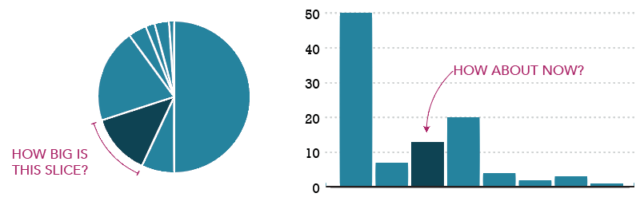
Pie chart research
- Save the Pies for Desert, Stephen Few
- An Economist’s Guide to Visualizing Data, Jon Schwabish
- Pie Charts are the Worst, Walter Hickey
- Graphical Perception: Theory, Experimentation, and Application to the Development of Graphical Methods, William S. Cleveland and Robert McGill
The current thinking is pretty much summed up by this tweet from data visualization pioneer Edward Tufte: "Pie chart users deserve same suspicion+skepticism as those who mix up its/it's, there/their. To compare,use little table, sentence, not pies." - Edward Tufte (@EdwardTufte)
That’s not to say that pie charts don’t have a place when communicating research. They're OK to use when the number of slices are fewer than four or five— and when you’re trying to tell a clear ‘part-to-whole’ story about a single slice.
Pie chart examples
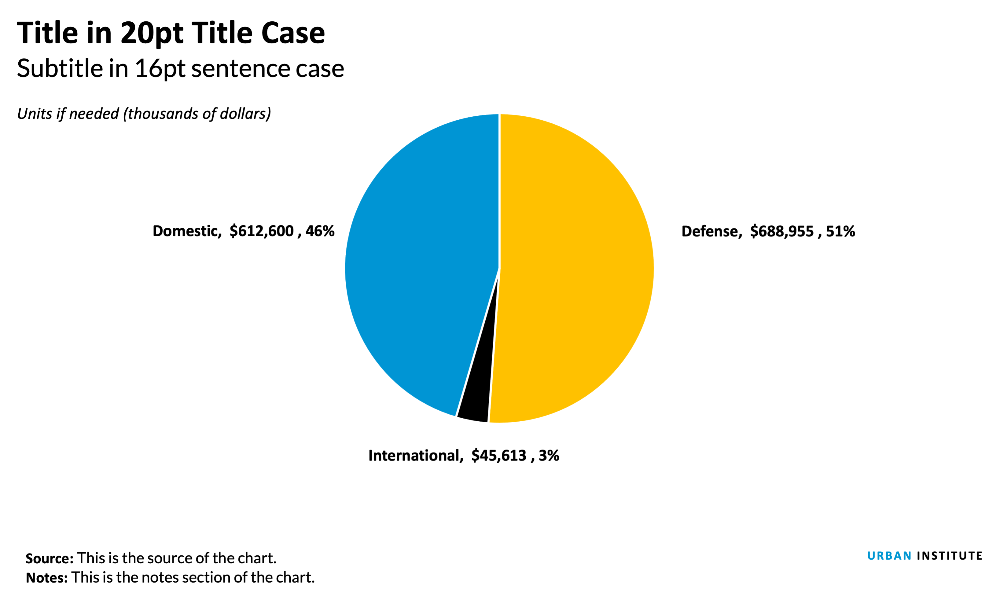
Notes about this chart
- Some times, pie charts are useful. In this case, the largest slice is 51%, a value that is very easy to recognize because our eyes can easily find the 50% mark.
- Pie charts work extremely well when they have fewer than four or five slices.
- It's helpful to directly label each slice. Relying on a key requires the reader to do too much work to shift their eyes from one spot to another.
- With only a few colors and direct labels, extra colors become distracting. Stick with only one color and use a highlight if needed.
- An alternative, below, is a histogram. But in this case, the pie chart is nearly as compelling.
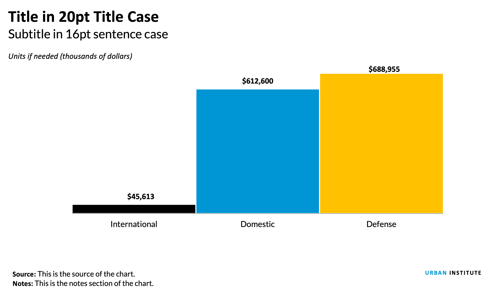
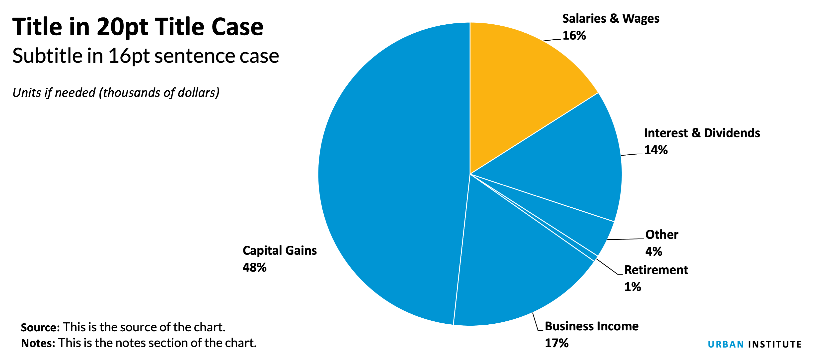
Notes about this chart
- This pie chart has many more slices than the first example, however It's still fairly easy to make out the individual slices.
- Depending on the purpose of the chart, a histogram may be a better option. If the purpose is to show the size of one slice compared to the rest of the categories, a pie chart makese sense. In that case, it would be good to highlight that individual slice with a different color. If the purpose of the chart is to show how each slice compares to other slices, a histogram would work better (below). Histograms make it much easier to compare values than pie charts.
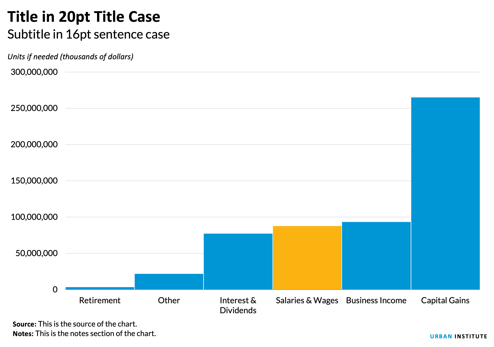
Maps
should it even be a map?
Just because you've got geographic data, doesn't mean that you have to make a map. Many times, there are more efficient storyforms that will get your point across more clearly. If your data shows a very clear geographic trend or if the absolute location of a place or event matters, maps might be the best approach, but sometimes the reflexive impulse to map the data can make you forget that showing the data in another form might answer other—and sometimes more important—questions. Consider using other graphic types when the interesting patterns are not geographic patterns, or when the geographic data is more effective for analysis than for presentation. Many times, a simple bar chart, column chart, scatterplot or table are more effective at translating your research to a reader.
In some cases, maps might actually be misleading. State level US maps, for example, give disproportionate weight to states with large land areas, and tend to obscure smaller states in the Northeast. Maps with more granularity can still be misleading. Many times, what appear to be geographic trends are actually directly correlated to population density (wealth, power consumption, etc.), or in some cases directly correlated to some other hidden variable such as racial composition, age distribution, or even weather.
Map Projections
Depending on the purpose and content, maps should use different projections. US maps for print publication, or use in reports should use the Albers Equal Area projection. Simple interactive county- or state-level maps also use the Albers projection. Zoomable tile-based interactive maps use the Mercator projection.
Map Colors
Maps should follow the same basic rules as other graphics when it comes to colors. Choropleth maps, or maps that show the magnitude of a variable, should normally use the blue sequential ramp.
Sometimes, a map needs to display change in a positive and negative way. In those cases, a diverging scheme works best.
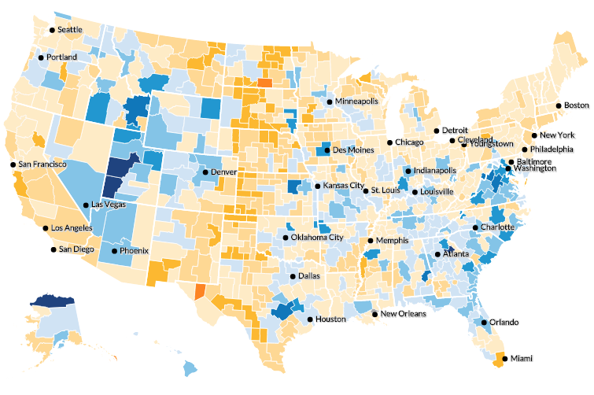
Other ways to map
Need to show data across multiple points in time? Consider using small map multiples to show the progression or spread.
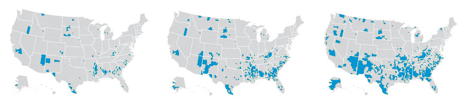
Tile Maps
The problem with normal state-by-state maps is that the western US has very large states and the eastern US has small states. This leads to the western states being over represented with more visual weight than the states in the northeast.
Recently, many organizations have adopted use of grid or tile maps. The advantage of these maps is that each state has equal visual weight.
Even better, these maps can be created with a simple excel file.
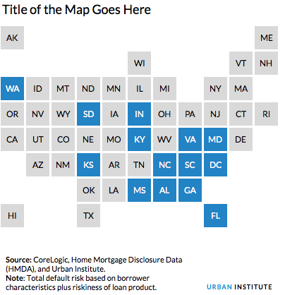
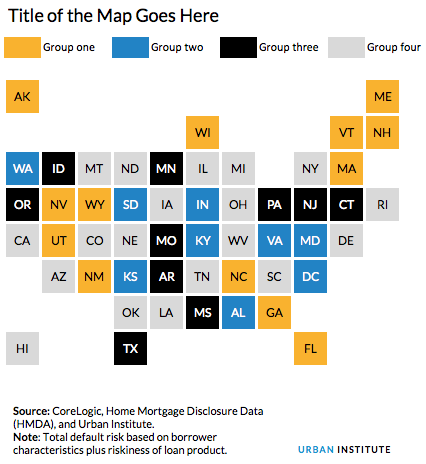
Additional resources
Have a question or looking for more help? Contact Ben Chartoff or Jon Schwabish.
Photo from Shutterstock